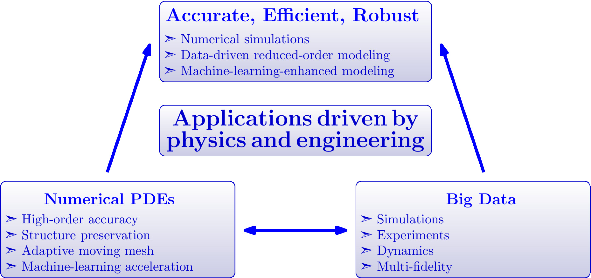

Research Overview
My research lies in the area of computational mathematics, focusing on the
design, analysis and application of accurate, stable, and efficient
numerical methods for solving hyperbolic systems,
and reduced-order modeling based data-driven or
machine-learning-enhanced methods.
Research Interests
- Numerical methods: high-order accurate methods, entropy stable methods, physical-constraints-preserving methods, adaptive moving mesh methods
- Reduced-order modeling: reduced basis method, data-driven methods, machine-learning-enhanced methods
